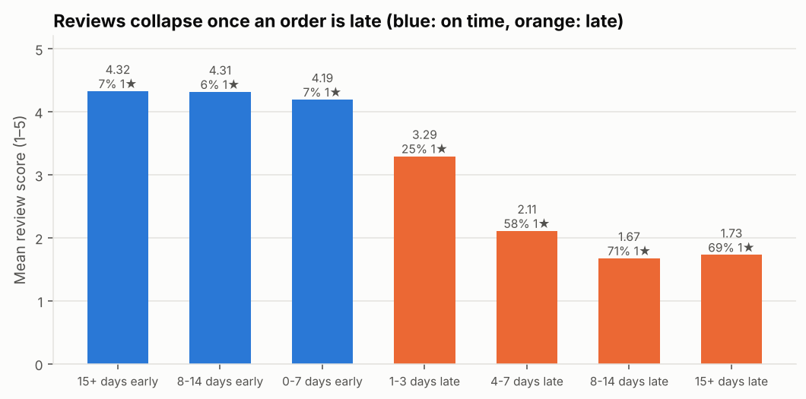
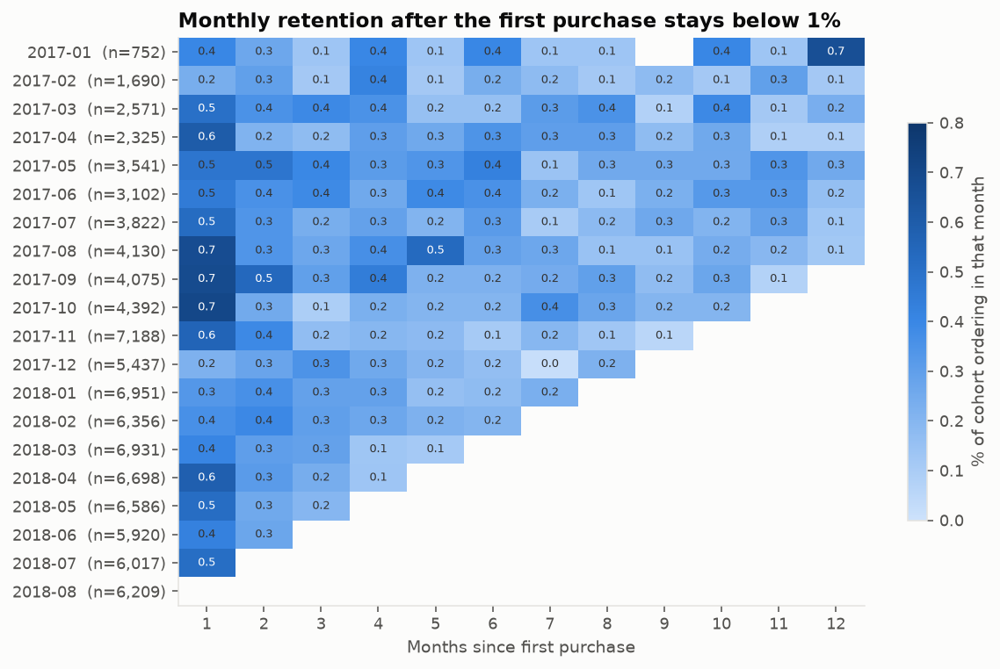
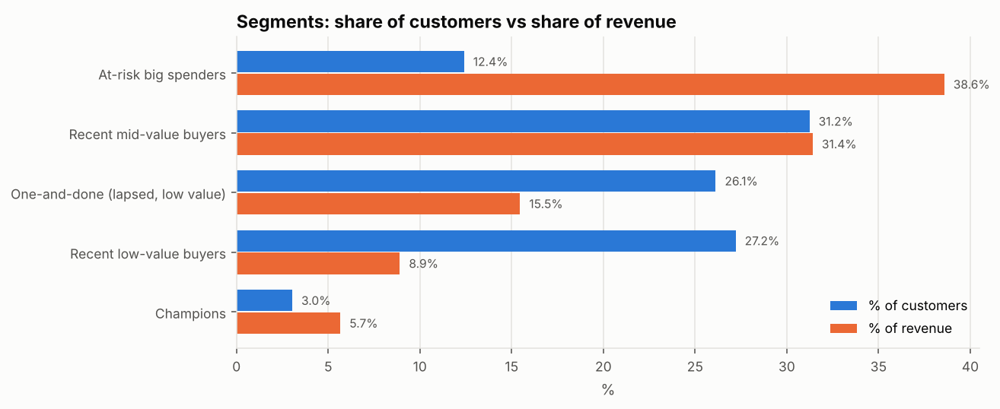
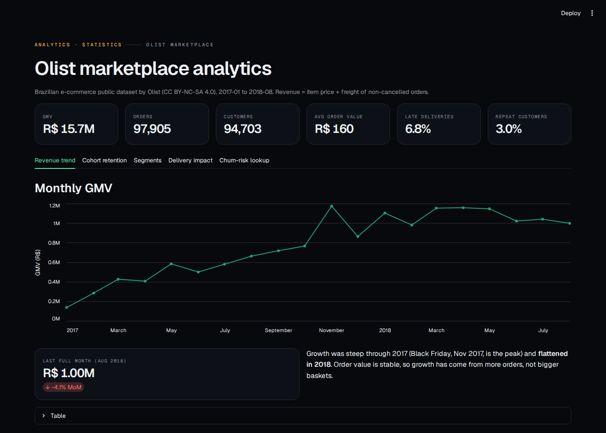

Growth has stalled.
Jan–Aug 2018 GMV was +140% on the same months of 2017, but mean month-on-month growth from Feb to Aug 2018 was −1.0%; monthly GMV has stayed between R$ 0.98M and R$ 1.16M.
Evidence SQL 01, findings.json
Analytics · Statistics2026 · Olist marketplace, 99,441 orders
A layered, quality-checked warehouse, portable SQL by domain, a metric layer, cohorts, RFM, CLV, seller ranking with uncertainty, a delivery model validated on later months and a simulated A/B test with a decision engine, on the real Olist data: 99,441 orders across 9 tables, from Sept 2016 to Oct 2018. It ends with a 10-page dashboard, a one-page summary and a recommendation not to launch free shipping as designed.
The dashboard is Streamlit compiled to WebAssembly: the first load takes 10–30 s while Python starts in your browser.
01Key findings
Every number below comes from executed code on the real data: SQL snapshots in results/sql/, analysis results in results/analytics/ and the executed notebooks.
Jan–Aug 2018 GMV was +140% on the same months of 2017, but mean month-on-month growth from Feb to Aug 2018 was −1.0%; monthly GMV has stayed between R$ 0.98M and R$ 1.16M.
Evidence SQL 01, findings.json
3.0% of 94,693 customers acquired in 2017–2018 ordered again; month-1 retention is 0.48%; 30% of second orders are same-day split baskets; the first order is 97.8% of all customer value.
Late orders average 2.27★ against 4.29★ on time (gap −2.02, 95% bootstrap CI −2.06 to −1.98; Cliff's δ = −0.64). The gap is negative and significant (Holm) in all 21 states and 29 categories large enough to test. An association: lateness was not randomised.
Evidence SQL 25, late_vs_on_time.json, 02_stats
The late rate is 21.4% in Alagoas against 4.5% in São Paulo; SP → RJ alone has 17.6% of all late deliveries. A LightGBM model scored on later months (Apr–Jul 2018) reaches late-delivery PR-AUC 0.123 vs 0.069 for the lane's history (base rate 4.0%) and delivery-time MAE 5.20 days vs 5.65 (Olist's own promise: 14.56).
Evidence SQL 09, 13, delivery_model.json
"At-risk big spenders" (K-Means) are 12.4% of customers but 38.6% of revenue; the transparent rule-based RFM segment of the same name is 14.7% / 27.5%.
Evidence 03_segmentation, rfm_segments.csv
BG/NBD + Gamma-Gamma predicted 739 repeat purchases for Mar–Aug 2018 against 720 actual (constant-rate baseline: 1,274), but ranks individual customers only modestly (ROC-AUC 0.59); the 180-day churn model's top decile captures 19.4% of repeat buyers (1.94x lift).
On real 2018 baskets with an assumed +15% multi-item lift, the subsidy costs R$ 9.26 per treatment order and contribution falls by about R$ 58.5k a month (95% CI −62.6k to −54.3k); the decision engine says do not ship, for any lift up to 50%.
Evidence ab_test.json (simulated), ab_testing.md




02Notebooks
Rendered from the committed, executed notebooks. CI re-executes them on every push.

03Methods
olist.stats.core (no SciPy, also used in the browser): descriptive CIs, Wilson intervals, two-proportion test with Cohen's h, bootstrap, permutation test, Bonferroni/Holm/Benjamini-Hochberg, power and sample size; olist.stats.inference adds Welch, Mann-Whitney, chi-square and a stratified mean difference with Holm-adjusted strata and a pooled estimate. Notebook 02 adds a proportional-odds regression (late: odds ratio 0.068 for a higher score).merge_asof); train 2017 / validate Q1 2018 / test Apr–Jul 2018; choice made on validation, refit, single test evaluation; baselines: Olist's promise and the lane mean.Being candid about the churn model
Olist's repeat rate is about 3% overall and about 1.2% in a 180-day window, and the data has no browsing or marketing signals. No model here is strong: the 180-day churn model reaches ROC-AUC 0.58 and the CLV model ranks returners at ROC-AUC 0.59. Both are useful in aggregate (the CLV model predicted 739 vs 720 repeat purchases) and for ranking cheap retention actions; neither should justify expensive per-customer offers, and an uplift holdout test should come before any incentive spend.
Honesty notes
d9e4980); the build-data workflow recomputes them. Reruns on the same machine are byte-identical; a rebuild on a GitHub runner differs only in the 6th-7th significant digit of optimiser outputs (CLV, the notebooks' ordinal regression).16 documented queries in sql/, each with its business question, method, expected output and dialect notes.
The 26 analytics queries are organised by domain under sql/analytics/<domain>/ and read only the marts (a test enforces it). Each file starts with a header giving its business question, method, expected output and dialect notes; the same text runs on DuckDB and Postgres, and CI compares the results cell by cell on the real data. Catalogue: docs/sql.md.
| Domain | Queries |
|---|---|
| revenue | 01 monthly GMV with MoM/YoY growth and 3-month average · 18 item revenue vs freight vs GMV vs payments |
| customer | 02 cohort retention · 03 RFM (NTILE) segments · 10 repeat-purchase rate · 12 time to second order · 15 customer value deciles · 20 cohort revenue |
| order | 11 basket size · 16 purchase timing · 17 status funnel (cancellation, completion) |
| delivery | 09 state SLA · 13 late-delivery hot-spot lanes · 22 delivery by category · 23 promise accuracy by month |
| payment | 07 payment mix · 26 instalments and vouchers by order value |
| product | 06 category Pareto · 08 freight burden · 19 category growth (same months YoY) · 24 category scorecard |
| seller | 05 revenue league · 21 seller scorecard (input to the uncertainty-aware ranking) |
| review | 04 delay buckets vs review · 14 review text proxies · 25 review by delivery status |
The queries use CTEs, joins and window functions (LAG, LEAD, NTILE, RANK, DENSE_RANK, PERCENT_RANK, ROW_NUMBER, running SUM() OVER, PERCENTILE_CONT ... WITHIN GROUP). Portability rules: DATE - DATE for days, CAST(date_trunc('month', ts) AS DATE) for months, EXTRACT cast to INTEGER, no ROUND(double, n), LOWER(...) LIKE instead of ILIKE, deterministic ORDER BY (float ties sort differently on the two engines), and anti-joins as LEFT JOIN ... IS NULL (Postgres runs NOT EXISTS inside CASE row by row; that made the CI parity job hang before it was fixed).
Reproduce, data licence and deployment notes: the README on GitHub.